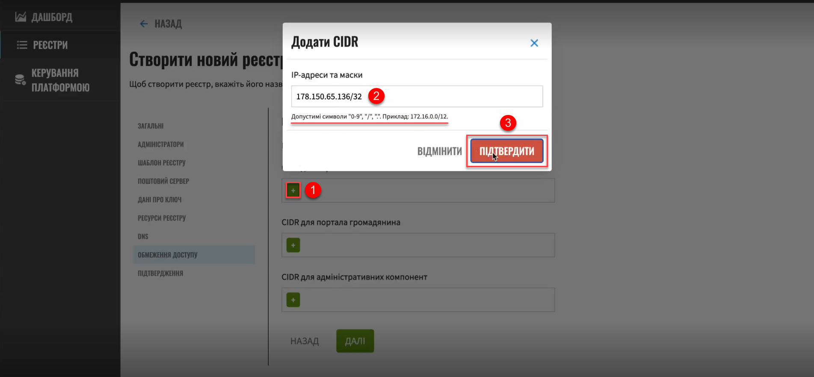

CIDR: Restricting access to Platform and registry components
| This document is available in both English and Ukrainian. Use the language toggle in the top right corner to switch between versions. |
1. Overview
To ensure secure access to OpenShift 4.x cluster components, you can restrict access to components used on the Platform.
- There are three main types of components in the system:
-
-
Platform
-
Registry
-
Infrastructure
-
The Platform provides an option to block access to each route at the HAProxy[1] level.
|
Allowed (whitelisted) IP addresses must be specified together with the subnet mask. In other words, the administrator can specify either a single IP address ( For more information about subnet masks and IPv4 addressing, refer to Subnetwork article on Wikipedia. |
2. Restricting access to registry components
2.1. Adding a CIDR when creating a registry
When creating a registry, an administrator can specify the IP addresses from which access to the registry components will be allowed. This is done in the Control Plane interface.
An administrator can specify a list of IP addresses separately for the officer portal, citizen portal, and administrative components.
| Each component must contain the cluster’s public IP address. Keycloak, in turn, must contain all CIDRs from other operational zones, or be accessible to all if the citizen portal is not restricted. |
- To configure CIDR for registry components, follow these steps:
-
Sign in to the Control Plane admin console interface.
 Figure 1. Admin console sign-in page
Figure 1. Admin console sign-in page -
Open the Registries section and create a new registry by clicking the
+ Create newbutton.To learn more about creating registries, see Deploying a registry.
Figure 2. Registries management section -
Go through the registry creation steps and stop at the Access restrictions section.
Figure 3. CIDR management interfaceHere you can add CIDRs for user portals and administrative components.
-
Click the
+(Add) button in a corresponding field. -
In the Add CIDR window, enter the IP addresses and their subnet masks.
-
Click
Confirm.Allowed characters are digits (0-9), periods (.), and a forward slash (/). For example: 172.16.0.0/12. Figure 4. Adding an IP address and subnet maskIf the IP address and subnet mask do not follow the
a.b.c.d/xformat, the system will return an error:Check the IP address format -
Add the required number of CIDRs. Here is an example of adding CIDRs for the user portals:
Figure 5. Added CIDRs example -
Click
Nextto finish creating the registry.As a result, the system generates a registry configuration update request. You can view request details in the Registries > Update requests section.
For details about viewing and confirming requests in Control Plane, see Approving registry configuration update requests. 
-
In the Update requests section, click the view icon to open your request.
-
Compare the changes between the two versions that open in a new window and make sure the data you entered is correct. Click
Approve.The proposed changes are applied to the deploy-templates/values.yaml configuration file upon confirmation. The IP addresses you entered are added to the values.yaml configuration file in the following format:
Example 1. Adding allowed IP addresses and subnets to the registry configuration in values.yamlglobal: whiteListIP: adminRoutes: "192.168.1.64/26 172.16.0.192/27" officerPortal: "192.168.1.240/29" citizenPortal: "0.0.0.0/0" -
Wait until Jenkins completes the
MASTER-Build-<registry-name>build. This may take a few minutes.
2.2. Adding or removing CIDRs when editing a registry
An administrator can add or remove whitelisted IP addresses when editing an existing registry. Admin console updates the corresponding IP addresses in the values.yaml file in the registry configuration repository.
|
To learn more about editing registries, see registry-management/control-plane-view-registry.adoc. |
| Adding CIDRs works the same way whether you create or edit a registry. For details, jump to Adding a CIDR when creating a registry. |
You can also remove current CIDRs from the list when editing a registry. To do this, open the Access restrictions section, click the delete icon next to the CIDR you wish to delete, and confirm your action.
3. Restricting access to Platform, infrastructure, and other components
In the Platform management section, an administrator can specify CIDRs to restrict external access to the Platform and infrastructure components (routes). Admin console creates an update request for the values.yaml file. Once an administrator approves the request, the Master-Build-cluster-mgmt pipeline adds the necessary records.
| Registry CIDRs should automatically be added for the Platform components as well. |
-
Open the Platform management section.
-
Click
Editin the upper-right corner. -
On the Registry settings page, find the List of allowed CIDRs section.
-
Click the
+(Add) button in the CIDR for administrative components field. -
In the Add CIDR window, enter the IP addresses and their subnet masks.
-
Click
Confirm.Allowed characters are digits (0-9), periods (.), and a forward slash (/). For example: 172.16.0.0/12. -
Add the required number of CIDRs and click
Confirm.Figure 6. Adding an IP address and subnet maskAs a result, the system generates a Platform configuration update request. You can view request details in the Platform > Update requests section.
For details about viewing and confirming requests in Control Plane, see Approving registry configuration update requests. -
In the Update requests section, click the view icon to open your request.
-
Compare the changes between the two versions that open in a new window and make sure the data you entered is correct. Click
Approve.The proposed changes are applied to the deploy-templates/values.yaml configuration file upon confirmation. The IP addresses you entered are added to the values.yaml Platform configuration file in the following format:
Example 2. Adding allowed IP addresses and subnets to the Platform configuration in values.yamlglobal: whiteListIP: adminRoutes: "192.168.1.64/26 172.16.0.192/27" -
Wait until Jenkins completes the
Master-Build-cluster-mgmtbuild. This may take a few minutes.